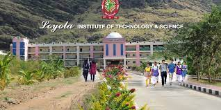

ILoyola Institute of Technology is a Christian Minority Institution of Higher Technical Education, founded by Rev. Fr. J.E. Arulraj, which has been established and managed by the Sisters of DMI (Daughters of Mary Immaculate) in the year 2003 with a mission of providing Quality Technical Education to the student community by promoting innovation, creativity and imparting life skills with positive attitude and to mould them to become successful and responsible professionals of the society.The college is approved by All India Council for Technical Education (AICTE) - New Delhi & affiliated to Anna University - Chennai.
